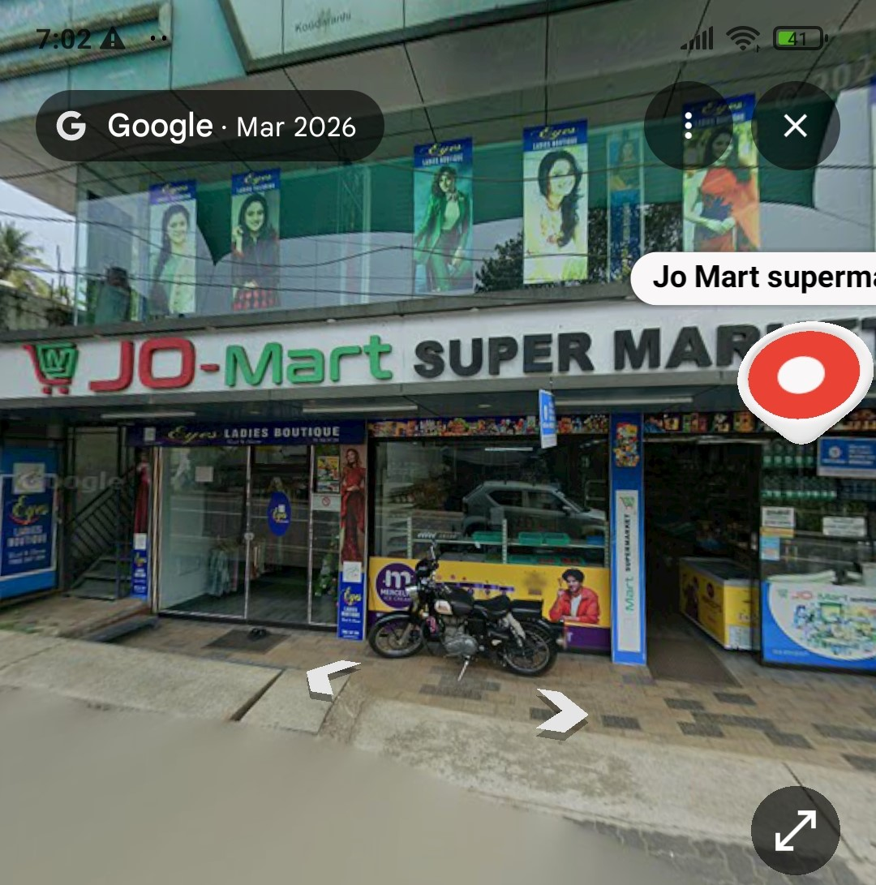

Welcome to Jo Mart Supermarket, Koodaranhi
Jo Mart Supermarket is a trusted shopping destination in Koodaranhi, dedicated to providing customers with quality products, fresh groceries, household essentials, and everyday necessities at affordable prices.
We take pride in serving the local community with a wide selection of products, friendly customer service, and a comfortable shopping experience. Our mission is to make daily shopping convenient and enjoyable for every customer who visits our store.
Whether you are looking for fresh vegetables, fruits, groceries, beverages, personal care items, or household products, Jo Mart Supermarket is committed to meeting your needs with quality and value.
We thank our customers for their continued trust and support and look forward to serving the Koodaranhi community for many years to come.
Our Opening Hours 7:00 am to 8:30 pm
Google Map for Jo Mart Supermarket

Place :Koodaranhi, Kozhikode, Kerala
Contact us :Phone: +91 98476 11611
Chat with us on whatsapp